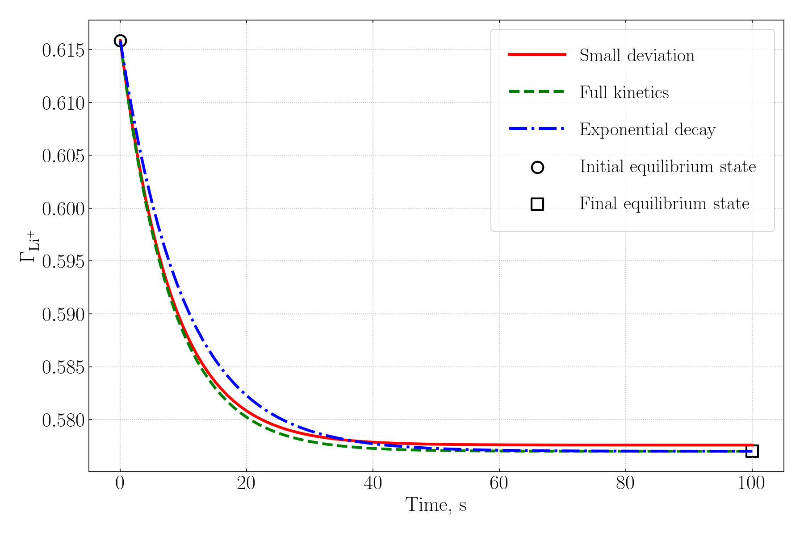
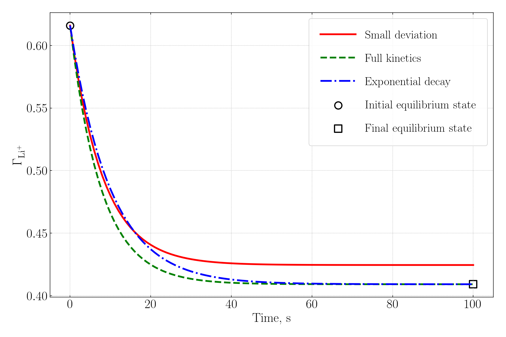
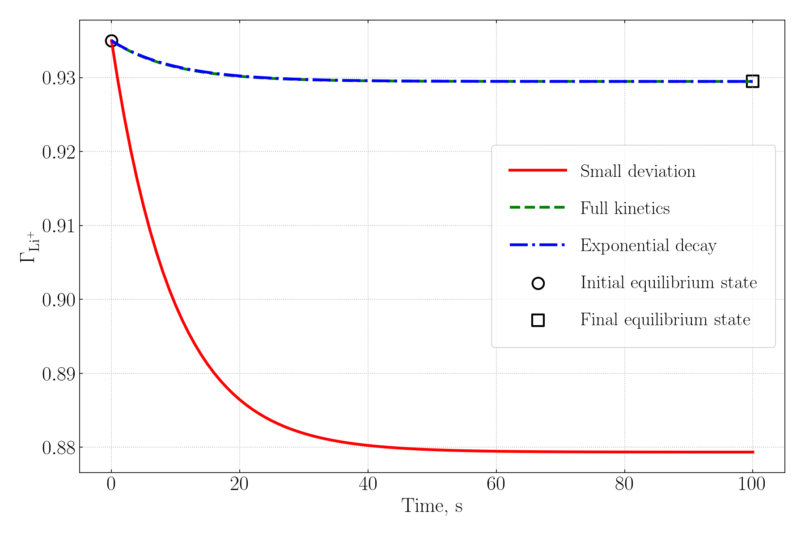
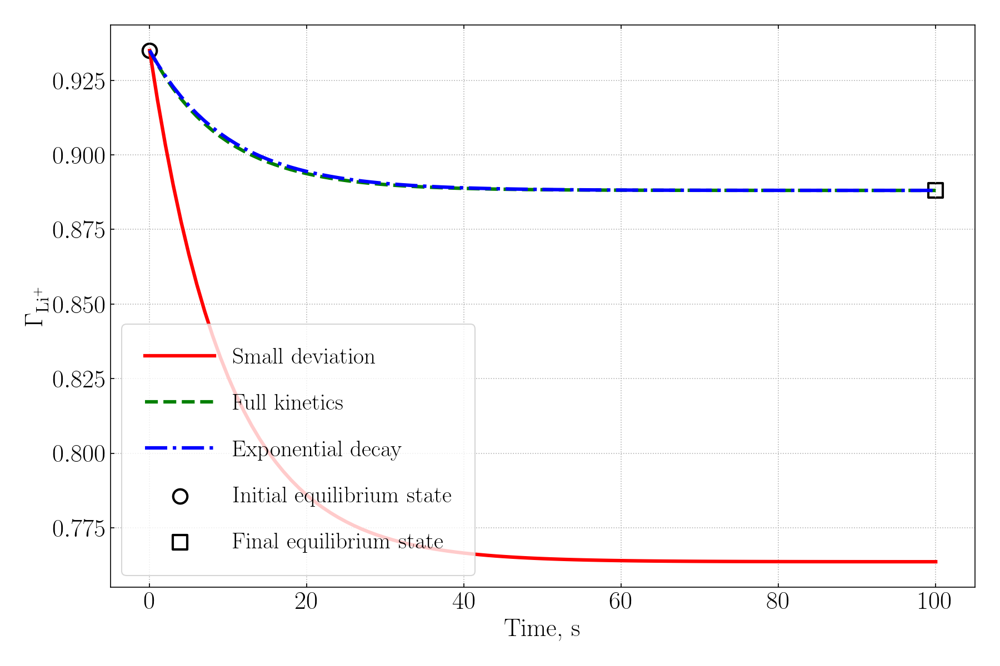

Kinetics of 1:1 Ion Exchange
Short theory
Let’s start by considering the following ion exchange equation: \[ \ce{>S-Na + Li+ <-->[K_{ex}] >S-Li + Na+} \]
for this equation \(K_{\text{ex}} = [S_{\ce{Li}}][C_{\ce{Na+}}] / [S_{\ce{Na}}][C_{\ce{Li+}}]\), where \(S\) denotes surface concentrations in mol/kgw and \(C\) denotes bulk concentrations in mol/kgw. In such formulation equilibrium constant is dimensionless, which is convenient.
To formulate Basic program in PHREEQC for kinetics we seek an expression of the form: \(\text{rate} = dS_{\ce{Na}}/dt = k_r (K^{\prime} C_{\ce{Na+}} - S_{\ce{Na}})\), where \(K^{\prime}\) is not necessarily equal to \(K_{\text{ex}}\), and \(k_r\) is a rate constant in m/s. We also note that lithium exchange rate is equal and opposite in sign. We now consider three ways of obtaining such an expression.
1. Exponential decay
We start with exponential decay because it is the easiest way and is described in hydrochemistry.eu, and we also get to pick sign convention in PHREEQC for kinetics expressions.
In this formulation \(\text{rate} = k_r (S^e_{\ce{Na}} - S_{\ce{Na}})\). Once the equilibrium state is known, computation of the rate is straight forward.
Here is a simple example slightly modified from hydrochemistry.eu:
SELECTED_OUTPUT 1
-reset true
-kinetic_reactants kin_exch_na kin_exch_li
RATES
kin_exch_na
# kinetic exchange: d(q_Na)/dt = k * (q_Na_eq - q_Na)
# q_Na_eq is equilibrium exchangeable Na
-start
10 q_Na_eq = {S_Na_eq}
20 q_Na = m
30 dq_Na = 100 * (q_Na_eq - q_Na) * time
40 save -dq_Na
-end
kin_exch_li
# kinetic exchange: d(q_K)/dt = k * (q_K_eq - q_K)
-start
10 q_Li_eq = {S_Li_eq}
20 q_Li = m
30 dq_Li = 100 * (q_Li_eq - q_Li) * time
40 save -dq_Li
-end
KINETICS 1
kin_exch_na; -formula Na 1.0
m0 0.55e-3
kin_exch_li; -formula Li 1.0
m0 0.55e-3Note the sign convention when saving moles in RATE and in formula for KINETICS.
2. Small deviation from a reference equilibrium state
If we now incorporate mass and charge balance in the equilibrium exchange constant expression, such that \(CEC = S_{\ce{Na}} + S_{\ce{Li}}\) and \(C_{\ce{Cl-}} = C_{\ce{Na+}} + C_{\ce{Li+}}\), we obtain an expression of \([S_\ce{Li}(Li)]\) (yes, I switched to lithium here, but it does not matter) that we hope to have in the form suitable for our RATES law.
\[ [S_\ce{Li}(Li)] = \cfrac{K_{\text{ex}}C_{\ce{Li+}} CEC}{C_{\ce{Cl-}} + (K_{\text{ex}} - 1)C_{\ce{Li+}}} \]
The slope of the tangent at a reference state (0) is given by \(dS/dt = K C_{\ce{Cl-}}CEC / (C_{\ce{Cl-}} + (K - 1)C_{\ce{Li_0}})^2 \equiv K^{\prime}\). Small deviations from the reference state are linear such that \(\Delta S_{\ce{Li}} \approx K^{\prime}\Delta C_{\ce{Li+}}\). We thus can write RATES Basic program.
RATES
Li_Na_lin_exch
-start
10 CEC_tot = {CEC}
20 logK_LiX = {log_KLi}
30 Li0 = {Li_ref}
40 S_Li0 = {s_Li_ref}
50 k_r = {k_r}
60 S_Li = m
70 Li = MOL("Li+")
80 Cl_tot = TOT("Cl")
90 K_GT = 10^logK_LiX
100 denom = Cl_tot + (K_GT - 1.0)*Li0
110 IF (denom <= 0) THEN denom = 1E-30
120 K_loc = K_GT * CEC_tot * Cl_tot / (denom * denom)
130 dLi = Li - Li0
140 dS_Li = S_Li - S_Li0
150 dS_Li_eq = K_loc * dLi
160 rate_S_Li = k_r * (dS_Li_eq - dS_Li)
170 moles = rate_S_Li * TIME
180 SAVE -moles
-end
KINETICS 1
Li_Na_lin_exch
-formula Li+ 1 Na+ -1
-m {s_Li_init} There are two important caveats: 1) this rate law is valid only at small deviations from the reference state; 2) this rate law assumes that we are at the same adsorption isotherm (i.e. \(C_{\ce{Cl-}}\) is constant and the same at the reference state and the new state).
Also, note that the always dimensionless equilibrium exchange constant used by PHREEQC (i.e. Gaines-Thomas convention) in the linear case equal to the equilibrium exchange constant I used. This will not be the case for a non-linear ion exchange, which is considered (here).
While such a rate is rather limited, it is easy and fast to compute (i.e. it has closed form solution or would require a simple and efficient itegrator) and thus lookup tables can be pre-generated for it easily when solving chemistry on large grids. The same conclusion applies to the first considered rate law.
3. Full kinetic expression
Finally, we could use full rate expression obtained directly from the equilibrium exchange constant. Again we seek an expression of the form \(\text{rate} = dS_{\ce{Li}}/dt = k_r (K^{\prime} C_{\ce{Li+}} - S_{\ce{Li}})\). From the equilibrium constant we obtain:
\[ K^{\prime} = \cfrac{K_{\text{ex}} CEC}{(C_{\ce{Cl-}} + (K_{\text{ex}} - 1)C_{\ce{Li+}})} \]
Then the RATES program is as follows.
SELECTED_OUTPUT 1
-reset true
-kinetic_reactants Li_Na_lin_exch
RATES
Li_Na_lin_exch
-start
10 CEC = {CEC}
20 K = {10**log_KLi}
140 K_prime = K * CEC/(MOL("Cl-") + (K-1)*(MOL("Cl-") - MOL("Na+")))
150 driver = (K_prime * MOL("Li+") - m)
160 rate = {k_r} * driver
170 moles = rate * TIME
180 save -moles
-end
KINETICS 1
Li_Na_lin_exch
-formula Li+ 1 Na+ -1
-m {s_Li_init}
-cvode trueThe important caveat here is that we used equilibrium constant expression to obtain expression for \(K^{\prime}\), but we use actual ionic concentrations, not equilibrium. In other words, numerically we are not integrating towards a constant or linear target, we are integrating toward a moving target, which is dependent on state.
Comparison of the three cases
So, now it would make sense to compare performance of these rate laws using PHREEQC. However, there is one complication. PHREEQC actually uses activities instead of concentrations and above rate expressions are based on charge balance tied to \(C_{\ce{Cl-}}\) molar concentration. Thus, above expressions have to be rederived in terms of activities. This exercise is left to the reader.
Below I compare the above three rate laws for the small equilibrium deviation along a constant adsorption isotherm, and for large deviations from equilibrium and isotherm jumping. All rates are computed in terms of activities.
Figure 1 compares the three rates at small equilibrium deviation on the same isotherm. All rates law perform very well. The performance of the small deviation rate law is very good.

Figure 2 compares the three rates at large equilibrium deviation on the same isotherm. The performance of the small deviation rate law is poor, it under estimates desorption because it essentially decays to a notably different equilibrium state. The other rate laws perform well although are distinct.

Figure 3 compares the three rates at small jump to a different isotherm. The small deviation rate law is off by a huge margin. It severely over estimates desorption. The other rate laws perform well, and are indistinguishable.

Figure 4 compares the three rates at large jump to a different isotherm. The performance picture did not change much from the previous example. The small deviation law is off, the isotherm change is catastrophic for its performance. The other rate laws produce the same results. This, however, does not imply they are the same law. They are simply equal at the chosen test conditions.

If you require the above rate expressions in activities, my contact details are in this page.